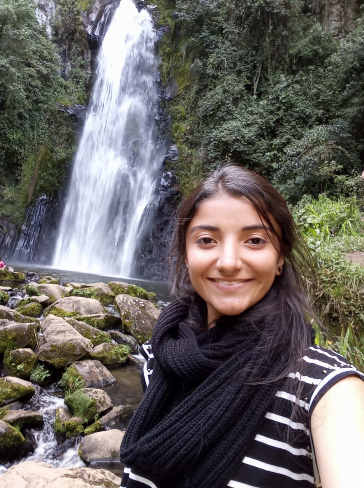

Murillo, Tolima, Colombia.
Instituto de Matemática Pura e Aplicada - IMPA
Estrada Dona Castorina, 110
Jardim Botânico|CEP 22460-320
Rio de Janeiro, RJ-Brazil
E-mail: da.paiva@impa.br
About me
I am a fourth year PhD student at IMPA (Rio de Janeiro, Brazil), under the supervision of Carolina Araujo. My mathematical interests lie in Algebraic and Birational Geometry. In particular, I have been understanding the Cremona Group and K3 surfaces. I am currently studying which automorphisms of smooth quartic surfaces in P3 are induced by Cremona transformations of the ambient space.
Previously, in February 2021, I completed my master's degree in Mathematics from IMPA under the guidance of Prof. Khadim War. Before that, I received my bachelor's degree in Mathematics with an emphasis on Statistics at Universidad del Tolima (Ibagué, Colombia). Here you can find my CV, and my Curriculo Lattes.
Publications/Preprints
My talks
- Gizatullin's problem and the Sarkisov program. Liberdade em Geometria Algébrica - LEGAL. March, 2024. Universidade Federal Fluminense. Teresópolis, Brazil.
- Automorphisms of quartic surfaces with Picard number two and Cremona transformations. 8th Iberoamerican Congress on Geometry. December, 2023. Geometry at the Frontier Research Center, Pucón, Chile.
- Superficies K3 y teoría de reticulados. Seminario de Álgebra, Geometría y Topología. July, 2023. Universidad de Antioquia. Medellín, Colombia.
- Introducción a la geometría algebraica y superficies K3. Seminario de Álgebra. July, 2023. Universidad del Tolima. Ibagué, Colombia.
- Automorphisms of quartic surfaces and Cremona transformations. Around Symmetries of K3 Surfaces. February, 2023. BIRS. Banff, Canada.
- Automorphisms of quartic surfaces and Cremona transformations. 15th ALGA (Commutative Algebra and Algebraic Geometry). February, 2023. IMPA. Rio de Janeiro, Brazil.
- A new example for Gizatullin's problem. Workshop Geometry at the Frontier III 1/2. November, 2022. Pucón, Chile.
- The Cremona Group. Student Algebraic Geometry Seminar at IMPA. November/2021. IMPA. Online Seminar.
- On the Cremona Group. Faculty Week Celebration - Science Faculty. October/2021. Universidad del Tolima. Online Seminar.
- Sobre o grupo de Cremona. Seminario 38 Movimientos. September/2021. Online Seminar.
Organization of seminars and conferences
Teaching
I was a teaching assistant for undergraduate courses at Universidad del Tolima:
- Fundamental Mathematics. Prof. Carolina Perdomo. 2018
- Univariate Calculus. Prof. Leonardo Duvan Restrepo. 2017
- Univariate Calculus. Prof. Leonardo Duvan Restrepo. 2016
-
Miscellaneous